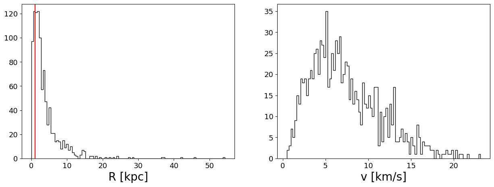
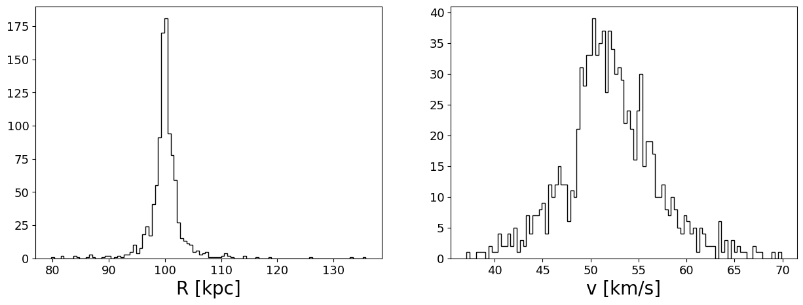
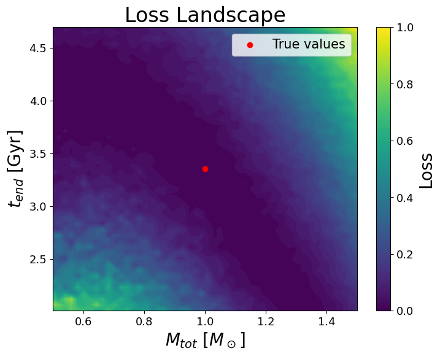

import os
from math import pi
os.environ["CUDA_VISIBLE_DEVICES"] = "3, 4" # Use only the first GPU
from typing import Optional, Tuple, Callable, Union, List
from functools import partial
import matplotlib.pyplot as plt
import jax
import jax.numpy as jnp
from jax import vmap, jit
from jax import random
jax.config.update("jax_enable_x64", True)
import numpy as np
from astropy import units as u
from astropy import constants as c
import odisseo
from odisseo import construct_initial_state
from odisseo.integrators import leapfrog
from odisseo.dynamics import direct_acc, DIRECT_ACC, DIRECT_ACC_LAXMAP
from odisseo.option_classes import SimulationConfig, SimulationParams, MNParams, PlummerParams, MN_POTENTIAL
from odisseo.initial_condition import Plummer_sphere, ic_two_body, sample_position_on_sphere, inclined_circular_velocity
from odisseo.utils import E_tot, Angular_momentum
from odisseo.time_integration import time_integration
from odisseo.units import CodeUnits
from odisseo.visualization import create_3d_gif, create_projection_gif
from odisseo.potentials import MyamotoNagai
plt.rcParams.update({
'font.size': 20,
'axes.labelsize': 20,
'xtick.labelsize': 13,
'ytick.labelsize': 13,
'legend.fontsize': 15,
})
Plummer Sphere#
code_length = 10.0 * u.kpc
code_mass = 1e8 * u.Msun
G = 1
code_units = CodeUnits(code_length, code_mass, G=G)
# Define the
config = SimulationConfig(N_particles=1_000,
return_snapshots=False,
num_snapshots=100,
num_timesteps=50,
external_accelerations=(MN_POTENTIAL, ),
acceleration_scheme=DIRECT_ACC,
batch_size=50,
softening=(0.1 * u.kpc).to(code_units.code_length).value) #default values
params = SimulationParams(t_end = (5 * u.Gyr).to(code_units.code_time).value,
Plummer_params= PlummerParams(Mtot=(1e8 * u.Msun).to(code_units.code_mass).value,
a=(1 * u.kpc).to(code_units.code_length).value),
MN_params= MNParams(M=(6.5e10 * u.Msun).to(code_units.code_mass).value,
a = (3.0 * u.kpc).to(code_units.code_length).value,
b = (0.3 * u.kpc).to(code_units.code_length).value),
G=G, )
print(config)
print(params)
SimulationConfig(N_particles=1000, dimensions=3, return_snapshots=False, num_snapshots=100, fixed_timestep=True, num_timesteps=50, softening=0.010000000000000002, integrator=0, acceleration_scheme=0, batch_size=50, double_map=False, external_accelerations=(2,))
SimulationParams(G=1, t_end=3.3535437046017282, Plummer_params=PlummerParams(a=0.1, Mtot=1.0), NFW_params=NFWParams(Mvir=<Quantity 1.62e+11 solMass>, r_s=<Quantity 15.3 kpc>, c=10, d_c=1.4888043637074615), PointMass_params=PointMassParams(M=<Quantity 1. solMass>), MN_params=MNParams(M=650.0, a=0.30000000000000004, b=0.03))
#set up the particles in the initial state
positions, velocities, mass = Plummer_sphere(key=random.PRNGKey(0), params=params, config=config)
#Plummer sphere distribution
fig = plt.figure(figsize=(15, 5))
ax = fig.add_subplot(121)
ax.hist((jnp.linalg.norm(positions, axis=1) * code_units.code_length).to(u.kpc), bins=100, histtype='step', color='k')
ax.axvline((params.Plummer_params.a*code_units.code_length).to(u.kpc).value, color='r', label='Plummer a')
ax.set_xlabel('R [kpc]')
ax = fig.add_subplot(122)
ax.hist(jnp.linalg.norm((velocities * code_units.code_velocity).to(u.km/u.s).value, axis=1), bins=100, histtype='step', color='k')
ax.set_xlabel('v [km/s]')
plt.show()

# radial distance of the center of mass
rp=100*u.kpc.to(code_units.code_length)
#sampling the center of mass on the sphere
key = random.PRNGKey(42)
num_samples = 1 # Number of positions to generate
pos = sample_position_on_sphere(key, rp, num_samples)
vel = jnp.zeros_like(pos) # Initialize velocities to zero, it dosen't matter because the acceleration of MyamotoNagai depend only on the postion
state_com = construct_initial_state(pos, vel)
# Calculate the acceleration at the center of mass
acc_com, _ = MyamotoNagai(state_com, config, params, return_potential=True)
#circular velocity at the center of mass
v_c = jnp.sqrt(jnp.linalg.norm(acc_com, axis=1) * rp)
inclination = jnp.radians(30) # 30-degree inclination
#bulk motion to give to each particle of the Plummer sphere
vel = inclined_circular_velocity(pos, v_c, inclination)
# Add the center of mass position and velocity to the Plummer sphere particles
positions = positions + pos
velocities = velocities + vel
initial_state = construct_initial_state(positions, velocities)
#Plummer sphere distribution
fig = plt.figure(figsize=(15, 5))
ax = fig.add_subplot(121)
ax.hist((jnp.linalg.norm(positions, axis=1) * code_units.code_length).to(u.kpc), bins=100, histtype='step', color='k')
ax.set_xlabel('R [kpc]')
ax = fig.add_subplot(122)
ax.hist(jnp.linalg.norm((velocities * code_units.code_velocity).to(u.km/u.s).value, axis=1), bins=100, histtype='step', color='k')
ax.set_xlabel('v [km/s]')
plt.show()

target_state = time_integration(initial_state, mass, config, params)
energy_target, Lz_target = E_tot(target_state, mass, config, params), Angular_momentum(target_state, mass, )[2]
def time_integration_for_mass_grad(Mtot, ):
params = SimulationParams(t_end = (5*u.Gyr).to(code_units.code_time).value,
Plummer_params= PlummerParams(Mtot=Mtot,
a=(1 * u.kpc).to(code_units.code_length).value),
MN_params= MNParams(M=(6.5e10 * u.Msun).to(code_units.code_mass).value,
a = (3.0 * u.kpc).to(code_units.code_length).value,
b = (0.3 * u.kpc).to(code_units.code_length).value),
G=G, )
#set up the particles in the initial state
positions, velocities, mass = Plummer_sphere(key=random.PRNGKey(0), params=params, config=config)
pos = sample_position_on_sphere(key, rp, num_samples)
vel = jnp.zeros_like(pos) # Initialize velocities to zero, it dosen't matter because the acceleration of MyamotoNagai depend only on the postion
state_com = construct_initial_state(pos, vel)
# Calculate the acceleration at the center of mass
acc_com, _ = MyamotoNagai(state_com, config, params, return_potential=True)
#circular velocity at the center of mass
v_c = jnp.sqrt(jnp.linalg.norm(acc_com, axis=1) * rp)
inclination = jnp.radians(30) # 30-degree inclination
#bulk motion to give to each particle of the Plummer sphere
vel = inclined_circular_velocity(pos, v_c, inclination)
# Add the center of mass position and velocity to the Plummer sphere particles
positions = positions + pos
velocities = velocities + vel
initial_state = construct_initial_state(positions, velocities)
final_state = time_integration(initial_state, mass, config, params)
energy, Lz = E_tot(final_state, mass, config, params), Angular_momentum(final_state, mass,)[2]
# loss = ((Lz - Lz_target)/Lz_target)**2
loss = ((Lz - Lz_target)/Lz_target)**2 + ((energy- energy_target)/energy_target)**2
return loss
# Calculate the value of the function and the gradient wrt the total mass of the plummer sphere
Mtot = (0.75e8 * u.Msun).to(code_units.code_mass).value
loss, grad = jax.value_and_grad(time_integration_for_mass_grad)(Mtot, )
print("Gradient of the total mass of the Plummer sphere:\n", grad)
print("Loss:\n", loss)
/export/home/vgiusepp/miniconda3/envs/test_sstrax/lib/python3.12/site-packages/jax/_src/core.py:700: FutureWarning: unhashable type: <class 'jax._src.interpreters.partial_eval.DynamicJaxprTracer'>. Attempting to hash a tracer will lead to an error in a future JAX release.
warnings.warn(
/export/home/vgiusepp/miniconda3/envs/test_sstrax/lib/python3.12/site-packages/jax/_src/core.py:700: FutureWarning: unhashable type: <class 'jax._src.interpreters.partial_eval.DynamicJaxprTracer'>. Attempting to hash a tracer will lead to an error in a future JAX release.
warnings.warn(
Gradient of the total mass of the Plummer sphere:
-6543453.879538081
Loss:
3.8536440079473885e-05
Mtot = (jnp.linspace(0.5*1e8, 1.5*1e8, 100) * u.Msun).to(code_units.code_mass).value
loss = vmap(time_integration_for_mass_grad)(Mtot)
plt.figure()
plt.plot((Mtot*code_units.code_mass).to(u.Msun), loss)
plt.axvline((1e8 * u.Msun).value, color='r', label='True $M_{tot}$')
plt.xlabel("$M_{tot}$ [$M_\odot$]")
plt.xscale('log')
plt.ylabel('Loss')
plt.legend()
<matplotlib.legend.Legend at 0x7f03785e8b60>
target_state = time_integration(initial_state, mass, config, params)
energy_target, Lz_target = E_tot(target_state, mass, config, params), Angular_momentum(target_state, mass, )[2]
def time_integration_for_time_grad(t_end, ):
params = SimulationParams(t_end = t_end,
Plummer_params= PlummerParams(Mtot=(1e8 * u.Msun).to(code_units.code_mass).value,
a=(1 * u.kpc).to(code_units.code_length).value),
MN_params= MNParams(M=(6.5e10 * u.Msun).to(code_units.code_mass).value,
a = (3.0 * u.kpc).to(code_units.code_length).value,
b = (0.3 * u.kpc).to(code_units.code_length).value),
G=G, )
#set up the particles in the initial state
positions, velocities, mass = Plummer_sphere(key=random.PRNGKey(0), params=params, config=config)
pos = sample_position_on_sphere(key, rp, num_samples)
vel = jnp.zeros_like(pos) # Initialize velocities to zero, it dosen't matter because the acceleration of MyamotoNagai depend only on the postion
state_com = construct_initial_state(pos, vel)
# Calculate the acceleration at the center of mass
acc_com, _ = MyamotoNagai(state_com, config, params, return_potential=True)
#circular velocity at the center of mass
v_c = jnp.sqrt(jnp.linalg.norm(acc_com, axis=1) * rp)
inclination = jnp.radians(30) # 30-degree inclination
#bulk motion to give to each particle of the Plummer sphere
vel = inclined_circular_velocity(pos, v_c, inclination)
# Add the center of mass position and velocity to the Plummer sphere particles
positions = positions + pos
velocities = velocities + vel
initial_state = construct_initial_state(positions, velocities)
final_state = time_integration(initial_state, mass, config, params)
energy, Lz = E_tot(final_state, mass, config, params), Angular_momentum(final_state, mass,)[2]
# loss = ((Lz - Lz_target)/Lz_target)**2
# loss = ((energy- energy_target)/energy_target)**2
loss = ((Lz - Lz_target)/Lz_target)**2 + ((energy- energy_target)/energy_target)**2
return loss
# Calculate the value of the function and the gradient wrt the total mass of the plummer sphere
t_end = (1*u.Gyr).to(code_units.code_time).value
loss, grad = jax.value_and_grad(time_integration_for_time_grad)(t_end, )
print("Gradient of the total mass of the Plummer sphere:\n", grad)
print("Loss:\n", loss)
Gradient of the total mass of the Plummer sphere:
-0.01710866642400615
Loss:
0.0009842700572825183
t_end = (jnp.linspace(3, 7, 100) * u.Myr).to(code_units.code_time).value
loss = vmap(time_integration_for_time_grad)(t_end)
plt.figure()
plt.plot((t_end*code_units.code_time).to(u.Myr), loss)
plt.axvline((5 * u.Gyr).value, color='r', label='True $t_{end}$')
plt.xlabel("$t_{end}$ [Gyr]")
plt.xscale('log')
plt.ylabel('Loss')
plt.legend()
<matplotlib.legend.Legend at 0x7f03785fd040>
target_state = time_integration(initial_state, mass, config, params)
energy_target, Lz_target = E_tot(target_state, mass, config, params), Angular_momentum(target_state, mass, )[2]
def time_integration_for_grad(M_tot, t_end, ):
params = SimulationParams(t_end = t_end,
Plummer_params= PlummerParams(Mtot=M_tot,
a=(1 * u.kpc).to(code_units.code_length).value),
MN_params= MNParams(M=(6.5e10 * u.Msun).to(code_units.code_mass).value,
a = (3.0 * u.kpc).to(code_units.code_length).value,
b = (0.3 * u.kpc).to(code_units.code_length).value),
G=G, )
#set up the particles in the initial state
positions, velocities, mass = Plummer_sphere(key=random.PRNGKey(0), params=params, config=config)
pos = sample_position_on_sphere(key, rp, num_samples)
vel = jnp.zeros_like(pos) # Initialize velocities to zero, it dosen't matter because the acceleration of MyamotoNagai depend only on the postion
state_com = construct_initial_state(pos, vel)
# Calculate the acceleration at the center of mass
acc_com, _ = MyamotoNagai(state_com, config, params, return_potential=True)
#circular velocity at the center of mass
v_c = jnp.sqrt(jnp.linalg.norm(acc_com, axis=1) * rp)
inclination = jnp.radians(30) # 30-degree inclination
#bulk motion to give to each particle of the Plummer sphere
vel = inclined_circular_velocity(pos, v_c, inclination)
# Add the center of mass position and velocity to the Plummer sphere particles
positions = positions + pos
velocities = velocities + vel
initial_state = construct_initial_state(positions, velocities)
final_state = time_integration(initial_state, mass, config, params)
energy, Lz = E_tot(final_state, mass, config, params), Angular_momentum(final_state, mass,)[2]
# loss = ((Lz - Lz_target)/Lz_target)**2
# loss = ((energy- energy_target)/energy_target)**2
loss = ((Lz - Lz_target)/Lz_target)**2 + ((energy- energy_target)/energy_target)**2
return loss
# Calculate the value of the function and the gradient wrt the total mass of the plummer sphere
t_end = (0.1*u.Gyr).to(code_units.code_time).value
M_tot = (0.75e8 * u.Msun).to(code_units.code_mass).value
loss, grad = jax.value_and_grad(time_integration_for_grad)(M_tot, t_end, )
print("Gradient of the total mass of the Plummer sphere:\n", grad)
print("Loss:\n", loss)
Gradient of the total mass of the Plummer sphere:
-0.0030945789568824246
Loss:
0.0016346342531605353
import jax.numpy as jnp
import jax
import matplotlib.pyplot as plt
# Define the range of M_tot and t_end values
M_tot_values = (jnp.linspace(0.5e8, 1.5e8, 50)*u.Msun).to(code_units.code_mass).value # Adjust range based on expected values
t_end_values = (jnp.linspace(3, 7, 50)*u.Gyr).to(code_units.code_time).value # Adjust range based on expected timescales
# Create a meshgrid
M_tot_grid, t_end_grid = jnp.meshgrid(M_tot_values, t_end_values, indexing="ij")
# Vectorize the loss function over a single input (M_tot, t_end)
batched_loss_fn = jax.vmap(time_integration_for_grad, in_axes=(0, 0))
# Flatten the grid for batch processing
M_tot_flat = M_tot_grid.flatten()
t_end_flat = t_end_grid.flatten()
# Compute losses in parallel
loss_values_flat = batched_loss_fn(M_tot_flat, t_end_flat)
# Reshape back to grid
loss_values = loss_values_flat.reshape(M_tot_grid.shape)
# Plot the heatmap
plt.figure(figsize=(8, 6))
plt.contourf(M_tot_values, t_end_values, loss_values.T, levels=50, cmap="viridis")
plt.scatter((1e8 * u.Msun).to(code_units.code_mass).value, (5 * u.Gyr).to(code_units.code_time).value, color="red", label="True values")
plt.colorbar(label="Loss")
plt.xlabel("$M_{tot}$ [$M_\odot$]")
plt.ylabel("$t_{end}$ [Gyr]")
plt.title("Loss Landscape")
plt.legend()
plt.show()

def NFW_potential_r(r):
return -4 * np.pi * G * 1e12 * (np.log(1 + r) - r/(1 + r))
r = np.linspace(0, 1000, 1000)
plt.plot(r, NFW_potential_r(r))
plt.xlabel('r')
plt.ylabel('$\Phi(r)$')
Text(0, 0.5, '$\\Phi(r)$')
def PointMass_potential_r(r):
return G * 1e8 / r
r = np.linspace(0, 10, 1000)
plt.plot(r, PointMass_potential_r(r))
plt.xlabel('r')
plt.ylabel('$\Phi(r)$')
/tmp/ipykernel_602722/1595001069.py:2: RuntimeWarning: divide by zero encountered in divide
return G * 1e8 / r
Text(0, 0.5, '$\\Phi(r)$')